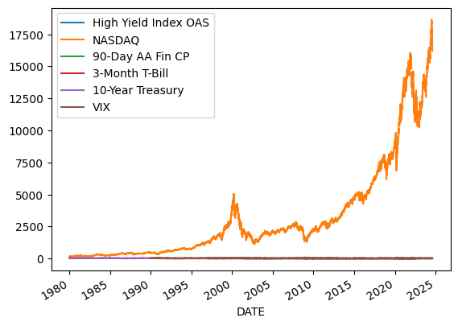
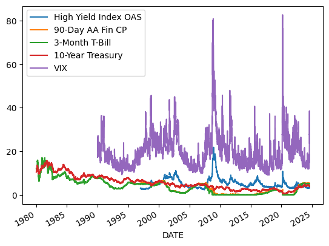
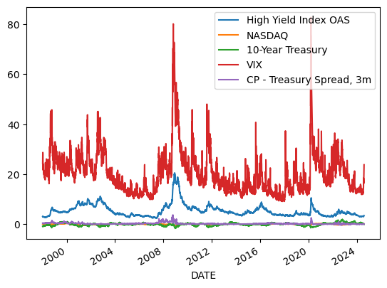
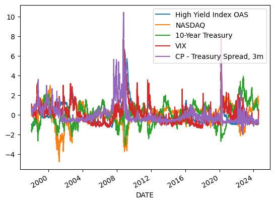
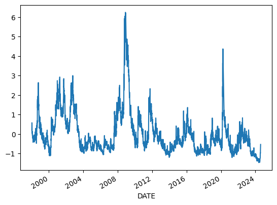
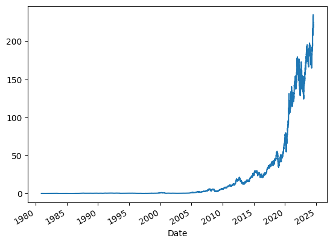
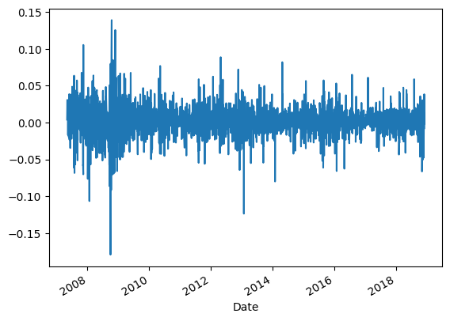
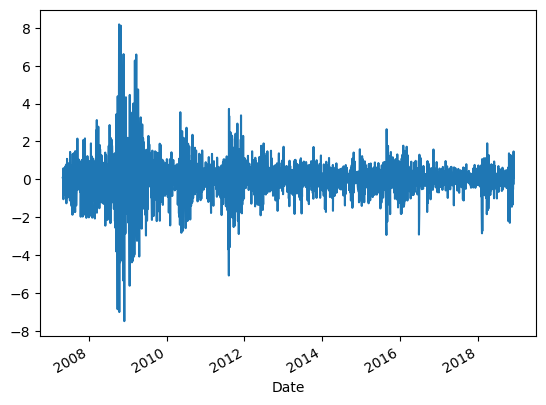
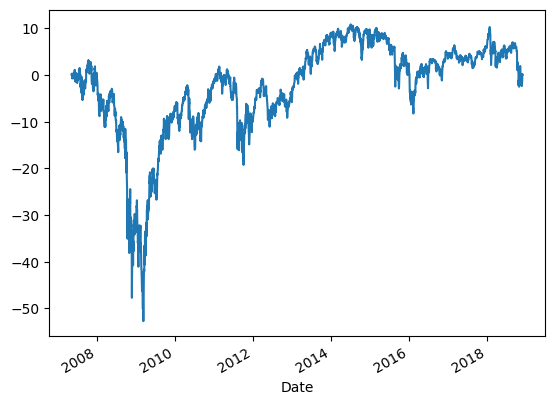

3.5 Factor Analysis on Financial and Economic Time Series#
Factor Analysis and Principal Component Analysis on Financial and Economic Time Series
# If you're running this on Colab, make sure to install the following packages using pip.
# On you're own computer, I recommend using conda or mamba.
# !pip install pandas-datareader
# !pip install yfinance
# !conda install pandas-datareader
# !conda install yfinance
import numpy as np
import pandas as pd
from matplotlib import pyplot as plt
import yfinance as yf
import pandas_datareader as pdr
import sklearn.decomposition
import statsmodels.multivariate.pca
import config
DATA_DIR = config.DATA_DIR
Downloading macroeconomic and financial data from FRED#
fred_series_long_names = {
'BAMLH0A0HYM2': 'ICE BofA US High Yield Index Option-Adjusted Spread',
'NASDAQCOM': 'NASDAQ Composite Index',
'RIFSPPFAAD90NB': '90-Day AA Financial Commercial Paper Interest Rate',
'TB3MS': '3-Month Treasury Bill Secondary Market Rate',
'DGS10': 'Market Yield on U.S. Treasury Securities at 10-Year Constant Maturity',
'VIXCLS': 'CBOE Volatility Index: VIX',
}
fred_series_short_names = {
'BAMLH0A0HYM2': 'High Yield Index OAS',
'NASDAQCOM': 'NASDAQ',
'RIFSPPFAAD90NB': '90-Day AA Fin CP',
'TB3MS': '3-Month T-Bill',
'DGS10': '10-Year Treasury',
'VIXCLS': 'VIX',
}
start_date = pd.to_datetime('1980-01-01')
end_date = pd.to_datetime('today')
df = pdr.get_data_fred(fred_series_short_names.keys(), start=start_date, end=end_date)
First, an aside about reading and writing data to disk.
df.to_csv(DATA_DIR / 'fred_panel.csv')
dff = pd.read_csv(DATA_DIR / 'fred_panel.csv')
dff.info()
<class 'pandas.core.frame.DataFrame'>
RangeIndex: 11882 entries, 0 to 11881
Data columns (total 7 columns):
# Column Non-Null Count Dtype
--- ------ -------------- -----
0 DATE 11882 non-null object
1 BAMLH0A0HYM2 7206 non-null float64
2 NASDAQCOM 11246 non-null float64
3 RIFSPPFAAD90NB 6468 non-null float64
4 TB3MS 535 non-null float64
5 DGS10 11153 non-null float64
6 VIXCLS 8732 non-null float64
dtypes: float64(6), object(1)
memory usage: 649.9+ KB
dff = pd.read_csv(DATA_DIR / 'fred_panel.csv', parse_dates=['DATE'])
dff.info()
<class 'pandas.core.frame.DataFrame'>
RangeIndex: 11882 entries, 0 to 11881
Data columns (total 7 columns):
# Column Non-Null Count Dtype
--- ------ -------------- -----
0 DATE 11882 non-null datetime64[ns]
1 BAMLH0A0HYM2 7206 non-null float64
2 NASDAQCOM 11246 non-null float64
3 RIFSPPFAAD90NB 6468 non-null float64
4 TB3MS 535 non-null float64
5 DGS10 11153 non-null float64
6 VIXCLS 8732 non-null float64
dtypes: datetime64[ns](1), float64(6)
memory usage: 649.9 KB
dff = dff.set_index('DATE')
df.to_parquet(DATA_DIR / 'fred_panel.parquet')
df = pd.read_parquet(DATA_DIR / 'fred_panel.parquet')
df.info()
<class 'pandas.core.frame.DataFrame'>
DatetimeIndex: 11882 entries, 1980-01-01 to 2024-08-08
Data columns (total 6 columns):
# Column Non-Null Count Dtype
--- ------ -------------- -----
0 BAMLH0A0HYM2 7206 non-null float64
1 NASDAQCOM 11246 non-null float64
2 RIFSPPFAAD90NB 6468 non-null float64
3 TB3MS 535 non-null float64
4 DGS10 11153 non-null float64
5 VIXCLS 8732 non-null float64
dtypes: float64(6)
memory usage: 649.8 KB
df
| BAMLH0A0HYM2 | NASDAQCOM | RIFSPPFAAD90NB | TB3MS | DGS10 | VIXCLS | |
|---|---|---|---|---|---|---|
| DATE | ||||||
| 1980-01-01 | NaN | NaN | NaN | 12.0 | NaN | NaN |
| 1980-01-02 | NaN | 148.17 | NaN | NaN | 10.50 | NaN |
| 1980-01-03 | NaN | 145.97 | NaN | NaN | 10.60 | NaN |
| 1980-01-04 | NaN | 148.02 | NaN | NaN | 10.66 | NaN |
| 1980-01-07 | NaN | 148.62 | NaN | NaN | 10.63 | NaN |
| ... | ... | ... | ... | ... | ... | ... |
| 2024-08-02 | 3.72 | 16776.16 | NaN | NaN | 3.80 | 23.39 |
| 2024-08-05 | 3.93 | 16200.08 | NaN | NaN | 3.78 | 38.57 |
| 2024-08-06 | NaN | 16366.85 | NaN | NaN | 3.90 | 27.71 |
| 2024-08-07 | 3.57 | 16195.81 | NaN | NaN | 3.96 | 27.85 |
| 2024-08-08 | 3.48 | 16660.02 | 5.16 | NaN | 3.99 | 23.79 |
11882 rows × 6 columns
Cleaning Data#
df = dff.rename(columns=fred_series_short_names)
df
| High Yield Index OAS | NASDAQ | 90-Day AA Fin CP | 3-Month T-Bill | 10-Year Treasury | VIX | |
|---|---|---|---|---|---|---|
| DATE | ||||||
| 1980-01-01 | NaN | NaN | NaN | 12.0 | NaN | NaN |
| 1980-01-02 | NaN | 148.17 | NaN | NaN | 10.50 | NaN |
| 1980-01-03 | NaN | 145.97 | NaN | NaN | 10.60 | NaN |
| 1980-01-04 | NaN | 148.02 | NaN | NaN | 10.66 | NaN |
| 1980-01-07 | NaN | 148.62 | NaN | NaN | 10.63 | NaN |
| ... | ... | ... | ... | ... | ... | ... |
| 2024-08-02 | 3.72 | 16776.16 | NaN | NaN | 3.80 | 23.39 |
| 2024-08-05 | 3.93 | 16200.08 | NaN | NaN | 3.78 | 38.57 |
| 2024-08-06 | NaN | 16366.85 | NaN | NaN | 3.90 | 27.71 |
| 2024-08-07 | 3.57 | 16195.81 | NaN | NaN | 3.96 | 27.85 |
| 2024-08-08 | 3.48 | 16660.02 | 5.16 | NaN | 3.99 | 23.79 |
11882 rows × 6 columns
Balanced panel? Mixed frequencies?
df['3-Month T-Bill'].dropna()
DATE
1980-01-01 12.00
1980-02-01 12.86
1980-03-01 15.20
1980-04-01 13.20
1980-05-01 8.58
...
2024-03-01 5.24
2024-04-01 5.24
2024-05-01 5.25
2024-06-01 5.24
2024-07-01 5.20
Name: 3-Month T-Bill, Length: 535, dtype: float64
Find a daily version of this series. See here: https://fred.stlouisfed.org/categories/22
We will end up using this series: https://fred.stlouisfed.org/series/DTB3
fred_series_short_names = {
'BAMLH0A0HYM2': 'High Yield Index OAS',
'NASDAQCOM': 'NASDAQ',
'RIFSPPFAAD90NB': '90-Day AA Fin CP',
'DTB3': '3-Month T-Bill',
'DGS10': '10-Year Treasury',
'VIXCLS': 'VIX',
}
df = pdr.get_data_fred(fred_series_short_names.keys(), start=start_date, end=end_date)
df = df.rename(columns=fred_series_short_names)
df
| High Yield Index OAS | NASDAQ | 90-Day AA Fin CP | 3-Month T-Bill | 10-Year Treasury | VIX | |
|---|---|---|---|---|---|---|
| DATE | ||||||
| 1980-01-01 | NaN | NaN | NaN | NaN | NaN | NaN |
| 1980-01-02 | NaN | 148.17 | NaN | 12.17 | 10.50 | NaN |
| 1980-01-03 | NaN | 145.97 | NaN | 12.10 | 10.60 | NaN |
| 1980-01-04 | NaN | 148.02 | NaN | 12.10 | 10.66 | NaN |
| 1980-01-07 | NaN | 148.62 | NaN | 11.86 | 10.63 | NaN |
| ... | ... | ... | ... | ... | ... | ... |
| 2024-08-02 | 3.72 | 16776.16 | NaN | 5.05 | 3.80 | 23.39 |
| 2024-08-05 | 3.93 | 16200.08 | NaN | 5.09 | 3.78 | 38.57 |
| 2024-08-06 | NaN | 16366.85 | NaN | 5.09 | 3.90 | 27.71 |
| 2024-08-07 | 3.57 | 16195.81 | NaN | 5.09 | 3.96 | 27.85 |
| 2024-08-08 | 3.48 | 16660.02 | 5.16 | 5.09 | 3.99 | 23.79 |
11731 rows × 6 columns
df.dropna()
| High Yield Index OAS | NASDAQ | 90-Day AA Fin CP | 3-Month T-Bill | 10-Year Treasury | VIX | |
|---|---|---|---|---|---|---|
| DATE | ||||||
| 1997-01-02 | 3.06 | 1280.70 | 5.35 | 5.05 | 6.54 | 21.14 |
| 1997-01-03 | 3.09 | 1310.68 | 5.35 | 5.04 | 6.52 | 19.13 |
| 1997-01-06 | 3.10 | 1316.40 | 5.34 | 5.05 | 6.54 | 19.89 |
| 1997-01-07 | 3.10 | 1327.73 | 5.33 | 5.02 | 6.57 | 19.35 |
| 1997-01-08 | 3.07 | 1320.35 | 5.31 | 5.02 | 6.60 | 20.24 |
| ... | ... | ... | ... | ... | ... | ... |
| 2024-07-22 | 3.05 | 18007.57 | 5.29 | 5.19 | 4.26 | 14.91 |
| 2024-07-25 | 3.08 | 17181.72 | 5.32 | 5.17 | 4.27 | 18.46 |
| 2024-07-31 | 3.25 | 17599.40 | 5.30 | 5.15 | 4.09 | 16.36 |
| 2024-08-01 | 3.35 | 17194.15 | 5.19 | 5.12 | 3.99 | 18.59 |
| 2024-08-08 | 3.48 | 16660.02 | 5.16 | 5.09 | 3.99 | 23.79 |
6449 rows × 6 columns
Transforming and Normalizing the data#
What is transformation and normalization? Are these different things?
Why would one transform data? What is feature engineering?
What is normalization?
What does stationarity mean? See the the following plots. Some of these variable are stationary. Other are not? Why is this a problem?
df.plot()
<Axes: xlabel='DATE'>
{kind=link}

df.info()
<class 'pandas.core.frame.DataFrame'>
DatetimeIndex: 11731 entries, 1980-01-01 to 2024-08-08
Data columns (total 6 columns):
# Column Non-Null Count Dtype
--- ------ -------------- -----
0 High Yield Index OAS 7206 non-null float64
1 NASDAQ 11246 non-null float64
2 90-Day AA Fin CP 6468 non-null float64
3 3-Month T-Bill 11153 non-null float64
4 10-Year Treasury 11153 non-null float64
5 VIX 8732 non-null float64
dtypes: float64(6)
memory usage: 641.5 KB
df.drop(columns=['NASDAQ']).plot()
<Axes: xlabel='DATE'>
{kind=link}

Let’s try some transformations like those used in the OFR Financial Stress Index: https://www.financialresearch.gov/financial-stress-index/files/indicators/index.html
dfn = pd.DataFrame().reindex_like(df)
dfn
| High Yield Index OAS | NASDAQ | 90-Day AA Fin CP | 3-Month T-Bill | 10-Year Treasury | VIX | |
|---|---|---|---|---|---|---|
| DATE | ||||||
| 1980-01-01 | NaN | NaN | NaN | NaN | NaN | NaN |
| 1980-01-02 | NaN | NaN | NaN | NaN | NaN | NaN |
| 1980-01-03 | NaN | NaN | NaN | NaN | NaN | NaN |
| 1980-01-04 | NaN | NaN | NaN | NaN | NaN | NaN |
| 1980-01-07 | NaN | NaN | NaN | NaN | NaN | NaN |
| ... | ... | ... | ... | ... | ... | ... |
| 2024-08-02 | NaN | NaN | NaN | NaN | NaN | NaN |
| 2024-08-05 | NaN | NaN | NaN | NaN | NaN | NaN |
| 2024-08-06 | NaN | NaN | NaN | NaN | NaN | NaN |
| 2024-08-07 | NaN | NaN | NaN | NaN | NaN | NaN |
| 2024-08-08 | NaN | NaN | NaN | NaN | NaN | NaN |
11731 rows × 6 columns
df['NASDAQ'].rolling(250).mean()
DATE
1980-01-01 NaN
1980-01-02 NaN
1980-01-03 NaN
1980-01-04 NaN
1980-01-07 NaN
..
2024-08-02 NaN
2024-08-05 NaN
2024-08-06 NaN
2024-08-07 NaN
2024-08-08 NaN
Name: NASDAQ, Length: 11731, dtype: float64
df = df.dropna()
df['NASDAQ'].rolling(250).mean()
DATE
1997-01-02 NaN
1997-01-03 NaN
1997-01-06 NaN
1997-01-07 NaN
1997-01-08 NaN
...
2024-07-22 13564.74956
2024-07-25 13590.21472
2024-07-31 13615.90668
2024-08-01 13640.08872
2024-08-08 13662.43556
Name: NASDAQ, Length: 6449, dtype: float64
# 'High Yield Index OAS': Leave as is
dfn['High Yield Index OAS'] = df['High Yield Index OAS']
dfn['CP - Treasury Spread, 3m'] = df['90-Day AA Fin CP'] - df['3-Month T-Bill']
# 'NASDAQ': # We're using something different, but still apply rolling mean transformation
dfn['NASDAQ'] = np.log(df['NASDAQ']) - np.log(df['NASDAQ'].rolling(250).mean())
dfn['10-Year Treasury'] = df['10-Year Treasury'] - df['10-Year Treasury'].rolling(250).mean()
# 'VIX': Leave as is
dfn['VIX'] = df['VIX']
dfn = dfn.drop(columns=['90-Day AA Fin CP', '3-Month T-Bill'])
dfn = dfn.dropna()
dfn.info()
<class 'pandas.core.frame.DataFrame'>
DatetimeIndex: 6200 entries, 1998-01-05 to 2024-08-08
Data columns (total 5 columns):
# Column Non-Null Count Dtype
--- ------ -------------- -----
0 High Yield Index OAS 6200 non-null float64
1 NASDAQ 6200 non-null float64
2 10-Year Treasury 6200 non-null float64
3 VIX 6200 non-null float64
4 CP - Treasury Spread, 3m 6200 non-null float64
dtypes: float64(5)
memory usage: 290.6 KB
We finished with our transformations. Now, let’s normalize. First, why is it important?
dfn.plot()
<Axes: xlabel='DATE'>
{kind=link}

Now, normalize each column, $\( z = \frac{x - \bar x}{\text{std}(x)} \)$
dfn = (dfn - dfn.mean()) / dfn.std()
dfn.plot()
<Axes: xlabel='DATE'>
{kind=link}

def pca(dfn, module='scikitlearn'):
if module == 'statsmodels':
_pc1, _loadings, projection, rsquare, _, _, _ = statsmodels.multivariate.pca.pca(dfn,
ncomp=1, standardize=True, demean=True, normalize=True, gls=False,
weights=None, method='svd')
_loadings = _loadings['comp_0']
loadings = np.std(_pc1) * _loadings
pc1 = _pc1 / np.std(_pc1)
pc1 = pc1.rename(columns={'comp_0':'PC1'})['PC1']
elif module == 'scikitlearn':
pca = sklearn.decomposition.PCA(n_components=1)
_pc1 = pd.Series(pca.fit_transform(dfn)[:,0], index=dfn.index, name='PC1')
_loadings = pca.components_.T * np.sqrt(pca.explained_variance_)
_loadings = pd.Series(_loadings[:,0], index=dfn.columns)
loadings = np.std(_pc1) * _loadings
pc1 = _pc1 / np.std(_pc1)
pc1.name = 'PC1'
else:
raise ValueError
loadings.name = "loadings"
return pc1, loadings
def stacked_plot(df, filename=None):
"""
df=category_contributions
# category_contributions.sum(axis=1).plot()
"""
df_pos = df[df >= 0]
df_neg = df[df < 0]
alpha = .3
linewidth = .5
ax = df_pos.plot.area(alpha=alpha, linewidth=linewidth, legend=False)
pc1 = df.sum(axis=1)
pc1.name = 'pc1'
pc1.plot(color="Black", label='pc1', linewidth=1)
plt.legend()
ax.set_prop_cycle(None)
df_neg.plot.area(alpha=alpha, ax=ax, linewidth=linewidth, legend=False, ylim=(-3,3))
# recompute the ax.dataLim
ax.relim()
# update ax.viewLim using the new dataLim
ax.autoscale()
# ax.set_ylabel('Standard Deviations')
# ax.set_ylim(-3,4)
# ax.set_ylim(-30,30)
if not (filename is None):
filename = Path(filename)
figure = plt.gcf() # get current figure
figure.set_size_inches(8, 6)
plt.savefig(filename, dpi=300)
pc1, loadings = pca(dfn, module='scikitlearn')
pc1.plot()
<Axes: xlabel='DATE'>
{kind=link}

stacked_plot(dfn)
{kind=link}
Let’s compare solutions from two different packages
def root_mean_squared_error(sa, sb):
return np.sqrt(np.mean((sa - sb)**2))
pc1_sk, loadings_sk = pca(dfn, module='scikitlearn')
pc1_sm, loadings_sm = pca(dfn, module='statsmodels')
root_mean_squared_error(pc1_sm, pc1_sk)
/opt/homebrew/Caskroom/mambaforge/base/envs/finm/lib/python3.12/site-packages/numpy/core/fromnumeric.py:3643: FutureWarning: The behavior of DataFrame.std with axis=None is deprecated, in a future version this will reduce over both axes and return a scalar. To retain the old behavior, pass axis=0 (or do not pass axis)
return std(axis=axis, dtype=dtype, out=out, ddof=ddof, **kwargs)
6.819735805196269e-16
Factor Analysis of a Panel of Stock Returns?#
sample = yf.download("SPY AAPL MSFT", start="2017-01-01", end="2017-04-30")
[ 0%% ]
[**********************67%%****** ] 2 of 3 completed
[*********************100%%**********************] 3 of 3 completed
sample
| Price | Adj Close | Close | High | Low | Open | Volume | ||||||||||||
|---|---|---|---|---|---|---|---|---|---|---|---|---|---|---|---|---|---|---|
| Ticker | AAPL | MSFT | SPY | AAPL | MSFT | SPY | AAPL | MSFT | SPY | AAPL | MSFT | SPY | AAPL | MSFT | SPY | AAPL | MSFT | SPY |
| Date | ||||||||||||||||||
| 2017-01-03 | 26.952709 | 56.930573 | 198.560013 | 29.037500 | 62.580002 | 225.240005 | 29.082500 | 62.840000 | 225.830002 | 28.690001 | 62.130001 | 223.880005 | 28.950001 | 62.790001 | 225.039993 | 115127600 | 20694100 | 91366500 |
| 2017-01-04 | 26.922539 | 56.675858 | 199.741302 | 29.004999 | 62.299999 | 226.580002 | 29.127501 | 62.750000 | 226.750000 | 28.937500 | 62.119999 | 225.610001 | 28.962500 | 62.480000 | 225.619995 | 84472400 | 21340000 | 78744400 |
| 2017-01-05 | 27.059452 | 56.675858 | 199.582642 | 29.152500 | 62.299999 | 226.399994 | 29.215000 | 62.660000 | 226.580002 | 28.952499 | 62.029999 | 225.479996 | 28.980000 | 62.189999 | 226.270004 | 88774400 | 24876000 | 78379000 |
| 2017-01-06 | 27.361116 | 57.167107 | 200.296692 | 29.477501 | 62.840000 | 227.210007 | 29.540001 | 63.150002 | 227.750000 | 29.117500 | 62.040001 | 225.899994 | 29.195000 | 62.299999 | 226.529999 | 127007600 | 19922900 | 71559900 |
| 2017-01-09 | 27.611732 | 56.985157 | 199.635513 | 29.747499 | 62.639999 | 226.460007 | 29.857500 | 63.080002 | 227.070007 | 29.485001 | 62.540001 | 226.419998 | 29.487499 | 62.759998 | 226.910004 | 134247600 | 20382700 | 46939700 |
| ... | ... | ... | ... | ... | ... | ... | ... | ... | ... | ... | ... | ... | ... | ... | ... | ... | ... | ... |
| 2017-04-24 | 33.476292 | 61.806141 | 209.986481 | 35.910000 | 67.529999 | 237.169998 | 35.987499 | 67.660004 | 237.410004 | 35.794998 | 67.099998 | 234.559998 | 35.875000 | 67.480003 | 237.179993 | 68537200 | 29770000 | 119209900 |
| 2017-04-25 | 33.683716 | 62.163116 | 211.208298 | 36.132500 | 67.919998 | 238.550003 | 36.224998 | 68.040001 | 238.949997 | 35.967499 | 67.599998 | 237.809998 | 35.977501 | 67.900002 | 237.910004 | 75486000 | 30242700 | 76698300 |
| 2017-04-26 | 33.485619 | 62.080715 | 211.075500 | 35.919998 | 67.830002 | 238.399994 | 36.150002 | 68.309998 | 239.529999 | 35.845001 | 67.620003 | 238.350006 | 36.117500 | 68.080002 | 238.509995 | 80164800 | 26190800 | 84702500 |
| 2017-04-27 | 33.511253 | 62.483406 | 211.252609 | 35.947498 | 68.269997 | 238.600006 | 36.040001 | 68.379997 | 238.949997 | 35.827499 | 67.580002 | 237.979996 | 35.980000 | 68.150002 | 238.770004 | 56985200 | 34971000 | 57410300 |
| 2017-04-28 | 33.478622 | 62.657337 | 210.792191 | 35.912498 | 68.459999 | 238.080002 | 36.075001 | 69.139999 | 238.929993 | 35.817501 | 67.690002 | 237.929993 | 36.022499 | 68.910004 | 238.899994 | 83441600 | 39548800 | 63532800 |
81 rows × 18 columns
sample['Adj Close']
| Ticker | AAPL | MSFT | SPY |
|---|---|---|---|
| Date | |||
| 2017-01-03 | 26.952709 | 56.930573 | 198.560013 |
| 2017-01-04 | 26.922539 | 56.675858 | 199.741302 |
| 2017-01-05 | 27.059452 | 56.675858 | 199.582642 |
| 2017-01-06 | 27.361116 | 57.167107 | 200.296692 |
| 2017-01-09 | 27.611732 | 56.985157 | 199.635513 |
| ... | ... | ... | ... |
| 2017-04-24 | 33.476292 | 61.806141 | 209.986481 |
| 2017-04-25 | 33.683716 | 62.163116 | 211.208298 |
| 2017-04-26 | 33.485619 | 62.080715 | 211.075500 |
| 2017-04-27 | 33.511253 | 62.483406 | 211.252609 |
| 2017-04-28 | 33.478622 | 62.657337 | 210.792191 |
81 rows × 3 columns
tickers = [
'AAPL','ABBV','ABT','ACN','ADP','ADSK','AES','AET','AFL','AMAT','AMGN','AMZN','APA',
'APHA','APD','APTV','ARE','ASML','ATVI','AXP','BA','BAC','BAX','BDX','BIIB','BK',
'BKNG','BMY','BRKB','BRK.A','COG','COST','CPB','CRM','CSCO','CVS','DAL','DD','DHR',
'DIS','DOW','DUK','EMR','EPD','EQT','ESRT','EXPD','FFIV','FLS','FLT','FRT','GE',
'GILD','GOOGL','GOOG','GS','HAL','HD','HON','IBM','INTC','IP','JNJ','JPM','KEY',
'KHC','KIM','KO','LLY','LMT','LOW','MCD','MCHP','MDT','MMM','MO','MRK','MSFT',
'MTD','NEE','NFLX','NKE','NOV','ORCL','OXY','PEP','PFE','PG','RTN','RTX','SBUX',
'SHW','SLB','SO','SPG','STT','T','TGT','TXN','UNH','UPS','USB','UTX','V','VZ',
'WMT','XOM',
]
" ".join(tickers)
'AAPL ABBV ABT ACN ADP ADSK AES AET AFL AMAT AMGN AMZN APA APHA APD APTV ARE ASML ATVI AXP BA BAC BAX BDX BIIB BK BKNG BMY BRKB BRK.A COG COST CPB CRM CSCO CVS DAL DD DHR DIS DOW DUK EMR EPD EQT ESRT EXPD FFIV FLS FLT FRT GE GILD GOOGL GOOG GS HAL HD HON IBM INTC IP JNJ JPM KEY KHC KIM KO LLY LMT LOW MCD MCHP MDT MMM MO MRK MSFT MTD NEE NFLX NKE NOV ORCL OXY PEP PFE PG RTN RTX SBUX SHW SLB SO SPG STT T TGT TXN UNH UPS USB UTX V VZ WMT XOM'
data = yf.download(" ".join(tickers), start="1980-01-01", end="2024-08-01", progress=False)
8 Failed downloads:
['APHA', 'COG', 'ATVI', 'FLT', 'RTN', 'BRKB', 'UTX', 'BRK.A']: YFTzMissingError('$%ticker%: possibly delisted; No timezone found')
data['Adj Close']['AAPL'].plot()
<Axes: xlabel='Date'>
{kind=link}

cols_with_many_nas = [
"BRK.A",
"APHA",
"UTX",
"RTN",
"COG",
"BRKB",
"ATVI",
"FLT",
"DOW",
"KHC",
"V",
"APTV",
"ABBV",
"ESRT",
]
df = data['Adj Close']
df = df.drop(columns=cols_with_many_nas).dropna().pct_change().dropna()
df.columns
Index(['AAPL', 'ABT', 'ACN', 'ADP', 'ADSK', 'AES', 'AET', 'AFL', 'AMAT',
'AMGN', 'AMZN', 'APA', 'APD', 'ARE', 'ASML', 'AXP', 'BA', 'BAC', 'BAX',
'BDX', 'BIIB', 'BK', 'BKNG', 'BMY', 'COST', 'CPB', 'CRM', 'CSCO', 'CVS',
'DAL', 'DD', 'DHR', 'DIS', 'DUK', 'EMR', 'EPD', 'EQT', 'EXPD', 'FFIV',
'FLS', 'FRT', 'GE', 'GILD', 'GOOG', 'GOOGL', 'GS', 'HAL', 'HD', 'HON',
'IBM', 'INTC', 'IP', 'JNJ', 'JPM', 'KEY', 'KIM', 'KO', 'LLY', 'LMT',
'LOW', 'MCD', 'MCHP', 'MDT', 'MMM', 'MO', 'MRK', 'MSFT', 'MTD', 'NEE',
'NFLX', 'NKE', 'NOV', 'ORCL', 'OXY', 'PEP', 'PFE', 'PG', 'RTX', 'SBUX',
'SHW', 'SLB', 'SO', 'SPG', 'STT', 'T', 'TGT', 'TXN', 'UNH', 'UPS',
'USB', 'VZ', 'WMT', 'XOM'],
dtype='object', name='Ticker')
df['AAPL'].plot()
<Axes: xlabel='Date'>
{kind=link}

pc1, loadings = pca(df, module='scikitlearn')
pc1.plot()
<Axes: xlabel='Date'>
{kind=link}

pc1.cumsum().plot()
<Axes: xlabel='Date'>
{kind=link}
